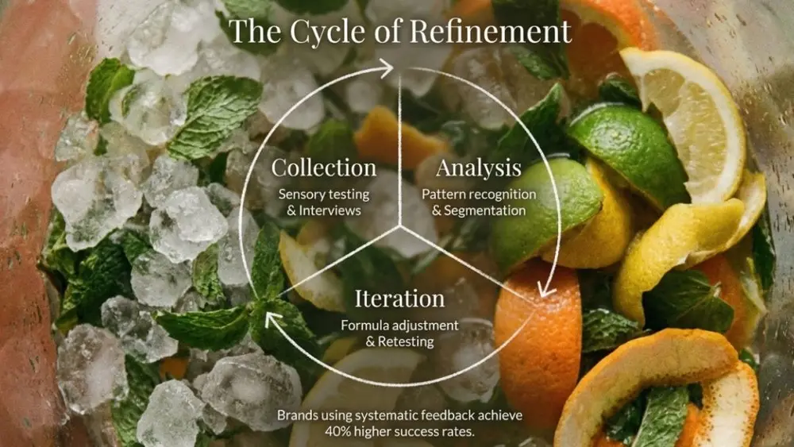
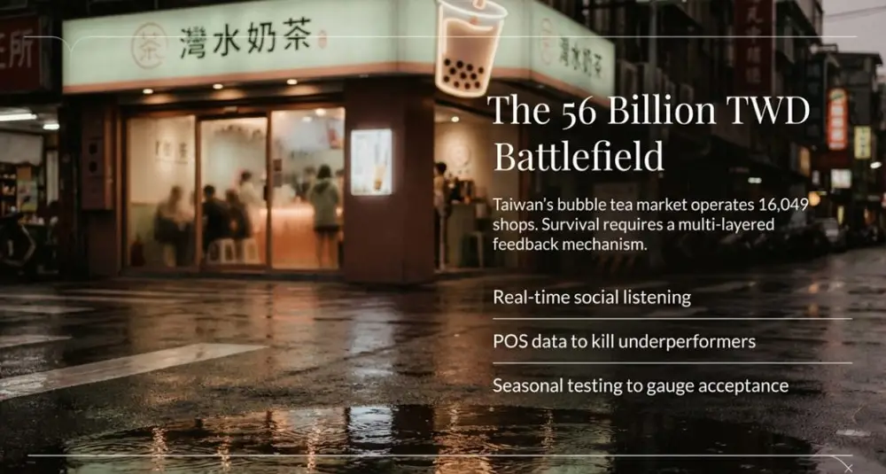

文章 / 飲品配方與資訊
Consumer Feedback Loop: How We Refine Flavors Based on Real-World Data
這篇是英文原文，尚未完成繁體中文翻譯。中文選單與相關商品連結不會切回英文介面。
查看英文原文（尚未翻譯）
Consumer feedback loops have become essential in beverage flavor development. Research from 2024 shows brands using systematic consumer feedback achieve 40% higher success rates for new products compared to traditional development approaches. This article explains how feedback systems work, proven data collection methods, and practical ways to transform consumer insights into measurable product improvements.
Three Core Stages of Feedback Loops
Data collection combines quantitative and qualitative methods. Sensory testing uses 9-point hedonic scales to measure overall liking, while triangle tests detect whether formula adjustments create noticeable differences. Qualitative interviews dig into the reasons behind preferences, uncovering why certain fruit flavors resonate in specific markets or which textural characteristics drive repeat purchases.
Analysis identifies actionable patterns. Statistical methods reveal which sensory attributes correlate most strongly with overall preference. Consumer segmentation uncovers how different groups prioritize different flavor profiles. Synergy Flavors research found that 53% of consumers associate citrus flavors with immunity-supporting beverages, while 30% prefer spices like ginger. These insights directly guide formulation decisions.
Iteration translates insights into formula adjustments. Changes might involve sweetness levels, acidity balance, flavor concentration, or texture modifications. Each iteration undergoes retesting to confirm the adjustment achieved its intended effect without creating unwanted side effects. The cycle continues until the product meets target specifications.


How Sensory Testing Quantifies Flavor Experience
Descriptive analysis builds a sensory profile for products. Trained panelists use standardized vocabulary to characterize attributes: caramel sweetness intensity 7/10, citrus acidity 5/10, creamy mouthfeel 6/10. These quantified measurements let R&D teams understand precisely how formula changes affect sensory performance.
Difference testing confirms whether formula changes are perceptible. Triangle tests ask panelists to identify which of three samples differs from the others. Statistical analysis determines whether differences reach significance. This proves particularly valuable for cost optimization: when ingredient prices fluctuate, difference testing evaluates whether alternatives maintain consumer-acceptable quality levels.
Just-About-Right testing merges expert analysis with consumer input. Experts identify major product attributes, then consumers rate each characteristic as too high, too low, or just right. When testing shows 65% of consumers find sweetness too high, R&D teams can quantify how much to reduce sugar content.
How AI Accelerates Flavor Development Cycles
AI analyzes millions of consumer data points to predict flavor trends. The Tastewise platform processes over 1 billion food data points monthly, tracking social media, restaurant menus, and consumer reviews for emerging flavors. Diageo’s partnership with Ai Palette for their Flavor Forecast report identified guava discussions up 18% in the UK, turmeric mentions rising 79%, and gochujang conversations increasing 55% in the US. These insights give brands a 6-12 month head start on market trends.
Machine learning models predict market performance for formula combinations. A 2024 Nature Communications study analyzed 250 beers’ chemical profiles against 180,000 consumer reviews, building predictive models that suggest precise compound adjustments to boost consumer satisfaction. Givaudan’s ATOM platform simulates ingredient interactions to accelerate new flavor combination development.
AI enables personalized flavor recommendations. Diageo’s What’s Your Whiskey platform analyzes consumer preferences through questions about rosemary, chilies, ginger, and orange juice affinity, matching individual taste profiles to their whiskey database for personalized suggestions. Similar technology applied to product development optimizes formulas for different market segments.
Taiwan Bubble Tea Industry Feedback Mechanisms
Taiwan’s bubble tea market demonstrates highly consumer-driven innovation. As of late 2024, Taiwan operates 16,049 bubble tea shops generating over 56.7 billion TWD in annual revenue. In this intensely competitive environment, successful brands employ multilayered feedback mechanisms: social media monitoring tracks real-time discussions and ratings, point-of-sale data identifies bestsellers and underperformers, seasonal product testing gauges market acceptance.
UG Tea implements AI brewing technology for precise customization. The system logs parameters for each drink along with customer feedback, continuously optimizing brewing variables. This real-time feedback loop lets brands rapidly adjust formulas to match regional preferences, where Taipei consumers might favor lower sweetness levels while southern markets accept higher sugar content.
Flavor innovation reflects evolving consumer demands. Fruit tea categories continue expanding, corresponding with health consciousness and natural ingredient preferences. New formats like cheese foam and oat milk respond to market demand for textural variety and plant-based options. 8yotea’s YO307 signature drink earned fan recognition as a divine beverage, demonstrating how unique flavor combinations build strong brand loyalty.


Building Effective Feedback Loops
Define clear testing objectives. Goals might be confirming new formula shows no detectable difference from existing product, identifying which of three flavor variants consumers prefer most, or verifying product ratings exceed competitors. Clear objectives determine appropriate testing methods and sample sizes.
Select representative samples. Consumer testing should recruit actual users of the product category, incorporating characteristics of core buyer groups including age, socioeconomic status, and regional factors. FlavorSum recommends panelists avoid foods affecting taste perception for one hour before testing, refrain from perfume use, and schedule tests outside meal times to ensure result reliability.
Execute iteration cycles rapidly. Automated research platforms significantly shorten insight collection timeframes. Automation spanning questionnaire design, distribution, data analysis, and reporting accelerates overall product development. PepsiCo uses AI to speed recipe ideation, optimize product launches, and forecast trends. Their 2025 Molecular Cola launch combined molecular gastronomy with AI-guided systems engineering flavor molecules through fermentation.
How Feedback Data Drives Business Decisions
Net Promoter Score measures customer loyalty and recommendation likelihood. NPS benchmarks vary across food and beverage categories, but research shows each 7-point NPS increase correlates with 1% revenue growth. After implementing NPS systems, AB InBev raised scores from -13 to 56, ranking 9th globally among food and beverage brands. NPS functions not just as a satisfaction metric but as an actionable growth mechanism: high-scoring promoters generate repeat purchases and word-of-mouth referrals, while low-scoring detractors provide feedback guiding specific improvements.
A/B testing compares market performance of different formulas or packaging. Consumers blindly evaluate single samples through sequential monadic testing, with researchers comparing performance across versions. This method proves particularly suitable for ingredient substitution, process changes, or competitor emulation scenarios, confirming whether changes create perceptible differences.
Long-term tracking reveals sustained impacts of formula adjustments. Six-week follow-up surveys evaluate repurchase intent and sustained satisfaction after initial trial. This proves critical for assessing new product potential: initial tasting scores might rate high, but without repurchase intent, products struggle to establish market presence.

Translating Feedback Into Quantifiable Improvements
Statistical significance ensures adjustment directions prove correct. When testing shows Formula A receives higher ratings than Formula B, statistical testing confirms whether differences reflect significance rather than random variation. This prevents making erroneous decisions based on noise.
Consumer segmentation reveals differentiated needs. Different age groups, genders, and regions may exhibit vastly different flavor preferences. Mintel research shows 40% of Chinese consumers frequently seek new flavors to try, with 23% of Korean consumers sharing this habit, while 34% of Australian and 33% of Thai consumers express interest in international flavors. Developing customized formulas for different market segments maximizes overall market coverage.
ROI calculations validate feedback system value. While consumer testing requires time and investment, returns significantly outweigh losses from product failures. The food industry launches approximately 15,000 new products annually, with 90% failing to succeed. Systematic testing substantially improves success probability.
Reference Sources
- Nature Communications – AI beer flavor prediction study
- Institute of Food Technologists – 2025 Flavor Trends
- Mintel – Future of Flavours 2025 Report
- Annual Reviews – Sensory Analysis and Consumer Preference Best Practices
- National Center for Biotechnology Information – Sensory Analysis Research
Frequently Asked Questions
Sample size depends on test type and objectives. Difference testing typically requires 30-50 participants for statistical significance, while consumer acceptance testing benefits from 100-150 participants for stable results. Segmentation analysis needs at least 50 participants per segment. Automated platforms rapidly recruit and screen qualified participants, substantially reducing execution costs.
Successful flavor innovation finds the sweet spot between novelty and familiarity. Research shows consumers enjoy moderate novelty, while completely unfamiliar combinations may trigger resistance. Strategies include pairing innovative elements with familiar bases (classic milk tea with novel fruits), gradually introducing product series for consumer adaptation, and building expectations through descriptive marketing. Limited seasonal releases offer low-risk methods for testing innovative flavors.
Online testing offers convenience and scale but has limitations. Virtual reality environments lack tactile experience, which proves crucial for assessing food quality, particularly fresh produce. Image quality constraints may affect visual evaluation. Best practice employs mixed methods: online surveys collect broad preference data while critical stages conduct physical sensory testing. Yenchuan’s customization services combine data insights with physical product development, ensuring formulas meet market needs while maintaining quality standards.
Author: Michael Zhang
Throughout my work helping beverage brands build feedback loops, the biggest challenge isn’t technical execution but organizational culture. Many teams rely on intuition or executive preferences for decisions, resisting consumer data that contradicts expectations. Successful feedback systems require leadership commitment: when data shows our favorite product concept doesn’t resonate with the market, teams need courage to pivot. This data-driven culture, combined with rapid iteration capability, explains why Taiwan’s bubble tea industry continues innovating and maintaining global leadership.
If you need assistance building systematic consumer feedback mechanisms or developing flavor formulas that meet market demands, schedule a consultation with the Yenchuan team to explore solutions tailored to your business.